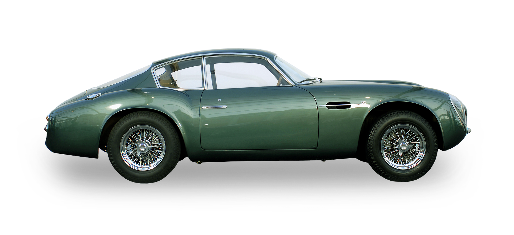

100년도 훨씬 전, 브랜드의 첫 번째 자동차가 수작업으로 제작되던 순간부터 애스턴마틴에게는 아름다움을 창조하는 특별한 능력이 있었습니다. 1913년 리오넬 마틴(Lionel Martin)과 로버트 뱀포드(Robert Bamford)가 런던에 작은 작업실을 설립하면서 시작된 애스턴마틴은 그 이후로 세계적으로 인정받는 럭셔리 브랜드로 성장했습니다. 애스턴마틴은 아름다움을 향한 사랑을 늘 주요 원칙으로 삼아왔습니다. 마틴과 뱀포드가 힘을 모았다는 것(기업으로서의 탄생)은 브랜드를 나타낸 최초의 표현이었습니다.
애스턴마틴은 브랜드 초창기부터 언제나 레이싱이 애스턴마틴 자동차의 성능 개선에 도움이 된다고 믿었습니다. 1922년 프랑스 그랑프리에서의 역사적인 데뷔를 시작으로, 1959년에는 DBR1이 ‘르망 24시’ 레이스에서 승리를 이뤘고, 환상적인 디자인의 DB4GT는 수많은 경쟁자들을 제치고 우승을 차지했습니다. 이처럼 애스턴마틴의 가장 사랑받는 몇몇 모델들은 레이스에서 최고의 활약을 펼쳤습니다.
1947년에 출시된 DB2는 오늘날 잘 알려진 ‘DB’ 명판을 단 최초의애스턴마틴 모델이며, 1951년 르망 클래스에서 2위와 3위를차지하며 강렬한 인상을 남겼습니다. 각각의 신차는 트랙에서의성능을 럭셔리한 안락함, 우아한 디자인, 정교한 장인 정신과결합하는 애스턴마틴의 기술을 발전시켜 브랜드를 더욱 각광받게 해주었습니다. 레이스에서 탄생한 DB3와 DB3S 다음에는 우아한 DB4와 그 후속 모델인 고성능 DB4GT가 출시되었고, 최근에는 이탈리아 코치빌더 자가토(Zagato)와의 역사적인 콜라보레이션을 통해 DB4GT Zagato가 탄생했습니다. 소박하게 시작해 오늘날에 이르기까지, 애스턴마틴이 도로와 트랙에서 펼치는 거부할 수 없는 매력은 계속됩니다. 전 세계 모든 사람들이 아름다운 디자인의 애스턴마틴 자동차를 찾습니다. 애스턴마틴 자동차는 고성능, 맞춤형 수제작, 기술 혁신, 시대를 초월한 스타일과 늘 동일시되어 왔습니다.